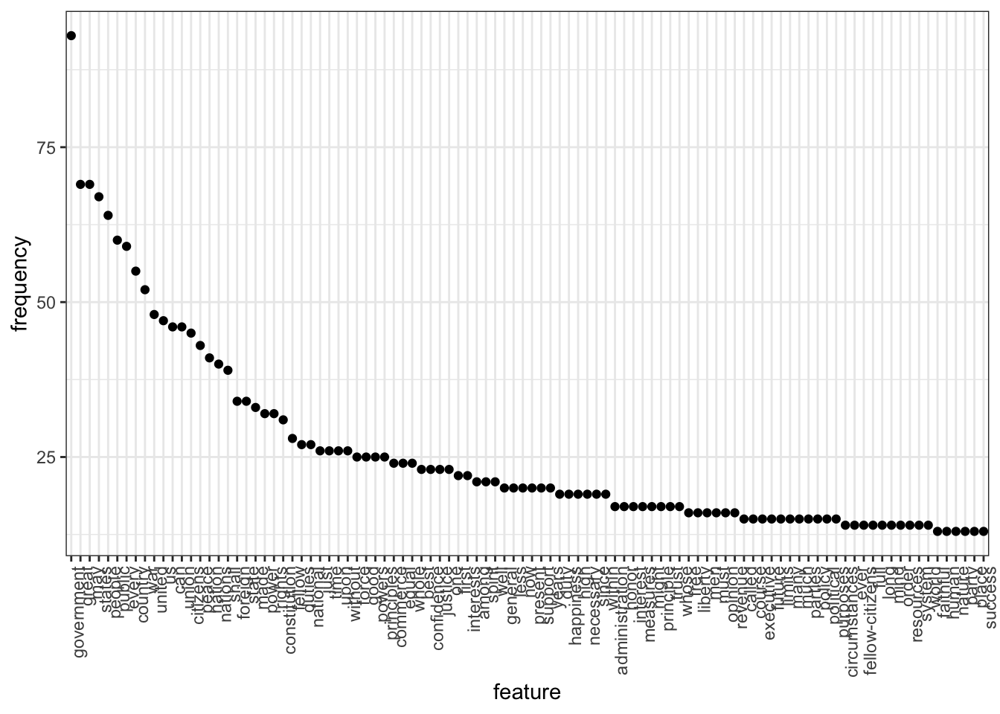
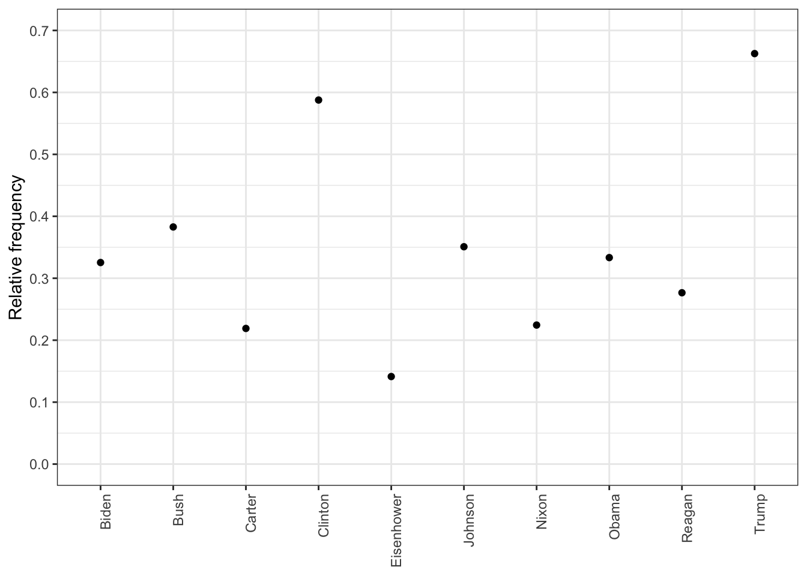
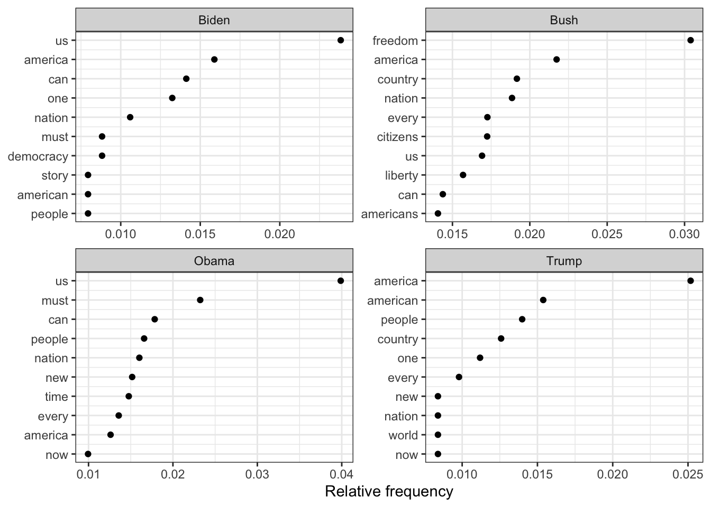
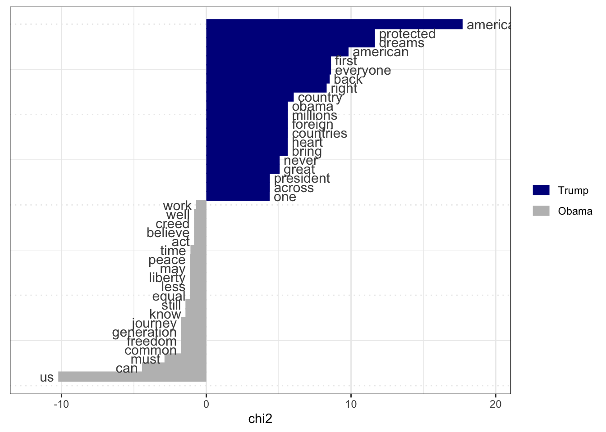

We can use the ‘Quanteda’ package for R to analyze tweets made during the summit that took place with Joe Biden and Xi Jinping back in 2021. First we import our data set of tweets, token-ize it, and cast the tokened break-down into a document-feature matrix (DTM).
Now, we can also analyze past presidential inauguration speeches to search for trends in topics discussed by incoming candidates or incumbents after the end of each election cycle.
Let us load in the speeches data-set, and look at the most common words used by Bush, Obama and Trump for their speeches:
We also make more focused plots of how often the four most recent presidents have used the term ‘american’. After we pair down wider feature views of relative term frequencies, below:
library(quanteda.textstats)features_dfm_inaug <-textstat_frequency(dfm_inaug, n =100)# Sort by reverse frequency orderfeatures_dfm_inaug$feature <-with(features_dfm_inaug, reorder(feature, -frequency))ggplot(features_dfm_inaug, aes(x = feature, y = frequency)) +geom_point() +theme(axis.text.x =element_text(angle =90, hjust =1))

# Get frequency grouped by presidentfreq_grouped <-textstat_frequency(dfm(tokens(data_corpus_inaugural_subset)), groups = data_corpus_inaugural_subset$President)# Filter the term "american"freq_american <-subset(freq_grouped, freq_grouped$feature %in%"american") ggplot(freq_american, aes(x = group, y = frequency)) +geom_point() +scale_y_continuous(limits =c(0, 14), breaks =c(seq(0, 14, 2))) +xlab(NULL) +ylab("Frequency") +theme(axis.text.x =element_text(angle =90, hjust =1))
Document-feature matrix of: 6 documents, 4,346 features (85.57% sparse) and 4 docvars.
features
docs my friends , before i
1953-Eisenhower 0.14582574 0.14582574 4.593511 0.1822822 0.10936930
1957-Eisenhower 0.20975354 0.10487677 6.345045 0.1573152 0.05243838
1961-Kennedy 0.19467878 0.06489293 5.451006 0.1297859 0.32446463
1965-Johnson 0.17543860 0.05847953 5.555556 0.2339181 0.87719298
1969-Nixon 0.28973510 0 5.546358 0.1241722 0.86920530
1973-Nixon 0.05012531 0.05012531 4.812030 0.2005013 0.60150376
features
docs begin the expression of those
1953-Eisenhower 0.03645643 6.234050 0.03645643 5.176814 0.1458257
1957-Eisenhower 0 5.977976 0 5.034085 0.1573152
1961-Kennedy 0.19467878 5.580792 0 4.218040 0.4542505
1965-Johnson 0 4.502924 0 3.333333 0.1754386
1969-Nixon 0 5.629139 0 3.890728 0.4552980
1973-Nixon 0 4.160401 0 3.408521 0.3007519
[ reached max_nfeat ... 4,336 more features ]
rel_freq <-textstat_frequency(dfm_rel_freq, groups = dfm_rel_freq$President)# Filter the term "american"rel_freq_american <-subset(rel_freq, feature %in%"american") ggplot(rel_freq_american, aes(x = group, y = frequency)) +geom_point() +scale_y_continuous(limits =c(0, 0.7), breaks =c(seq(0, 0.7, 0.1))) +xlab(NULL) +ylab("Relative frequency") +theme(axis.text.x =element_text(angle =90, hjust =1))

dfm_weight_pres <- data_corpus_inaugural %>%corpus_subset(Year >2000) %>%tokens(remove_punct =TRUE) %>%tokens_remove(stopwords("english")) %>%dfm() %>%dfm_weight(scheme ="prop")# Calculate relative frequency by presidentfreq_weight <-textstat_frequency(dfm_weight_pres, n =10, groups = dfm_weight_pres$President)ggplot(data = freq_weight, aes(x =nrow(freq_weight):1, y = frequency)) +geom_point() +facet_wrap(~ group, scales ="free") +coord_flip() +scale_x_continuous(breaks =nrow(freq_weight):1,labels = freq_weight$feature) +labs(x =NULL, y ="Relative frequency")

Let us also compare word usage by Obama and Trump:
pres_corpus <-corpus_subset(data_corpus_inaugural, President %in%c("Obama", "Trump"))# Create a dfm grouped by presidentpres_dfm <-tokens(pres_corpus, remove_punct =TRUE) %>%tokens_remove(stopwords("english")) %>%tokens_group(groups = President) %>%dfm()# Calculate keyness and determine Trump as target groupresult_keyness <-textstat_keyness(pres_dfm, target ="Trump")# Plot estimated word keynesstextplot_keyness(result_keyness)

We can see, for instance, that Trump used more forceful and relatively less idealistic wordage than Obama for his inaugural speech.
If desired, we could also model probabilities derived from text data using unsupervised machine learning methods such as Wordfish. Wordfish can look at a set of documents, and based off of the incidence of certain words, estimate where in the set a given document likely is. This can be useful for an analysis that might make time series presumptions concerning a given document-set, for example.
Literature is often an inherently unstructured source of information. At least compared to the usual numeric tabular data entries that a lot of data analysis tools are built for. But with statistical algorithmic approaches, the quantification of this most naturally human output can be brought under the purview of information extraction techniques.